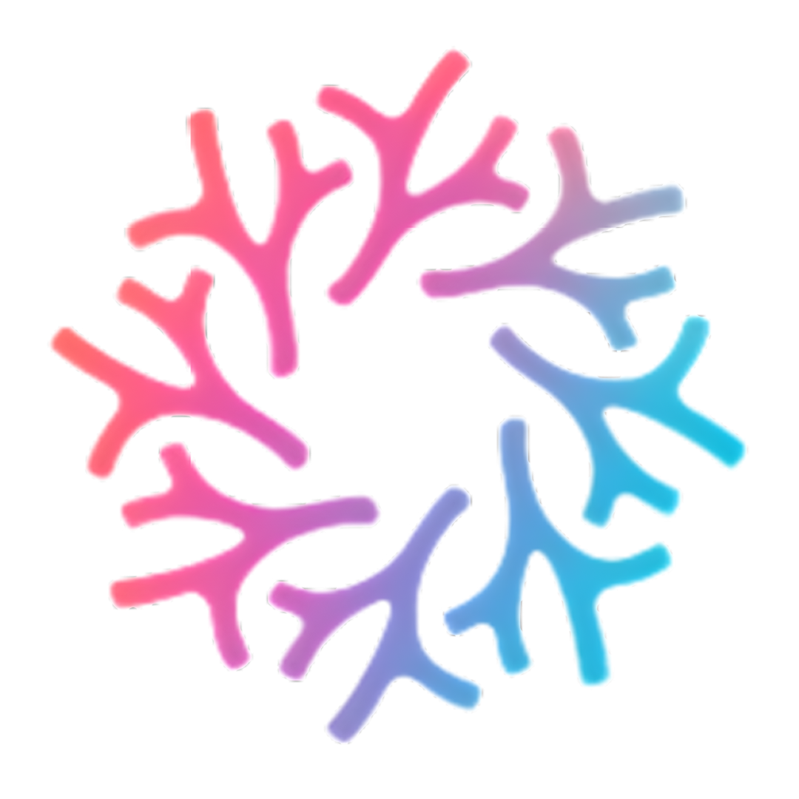

Alerta de Risco
[Nome do Recife]
Ação recomendada:
Ativar sistema de mitigação.
Nível de Risco:
--
Estresse Térmico (DHW):
--
Temperatura Atual:
--
Acidificação (pH):
--
Ciente (Desativar Alerta)
×

Nome do Recife
CARREGANDO...
Métricas Atuais
Estresse (DHW)
--
Temp. Água
--
Acidificação (pH)
--
Radiação UV
--
Histórico (Últimos 7 Dias)
Temperatura
pH
Turbidez
Informar Ação Humana